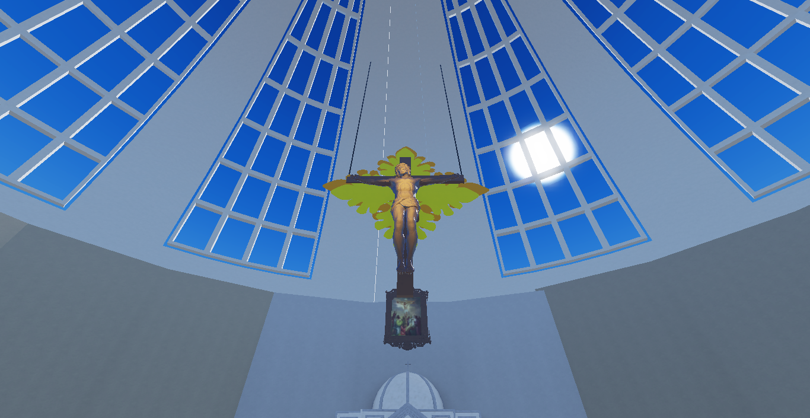
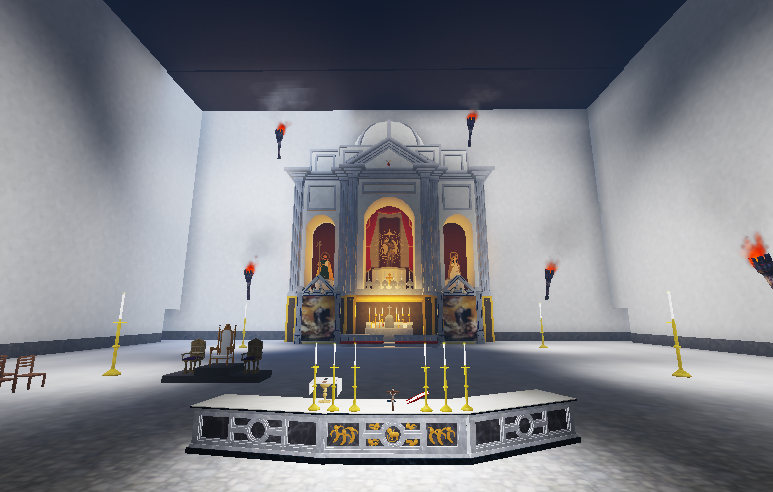
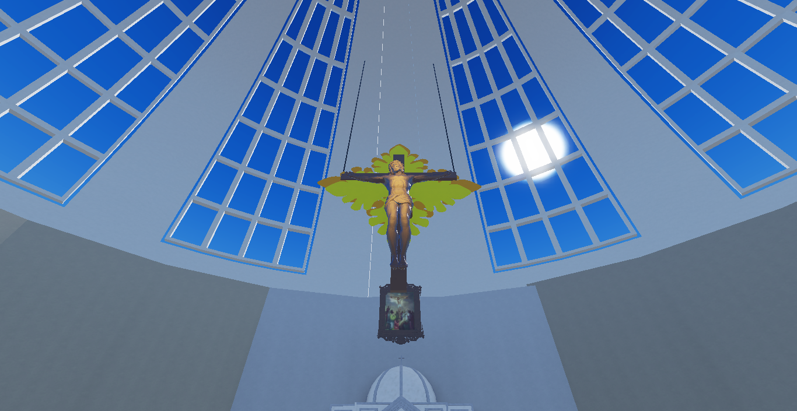
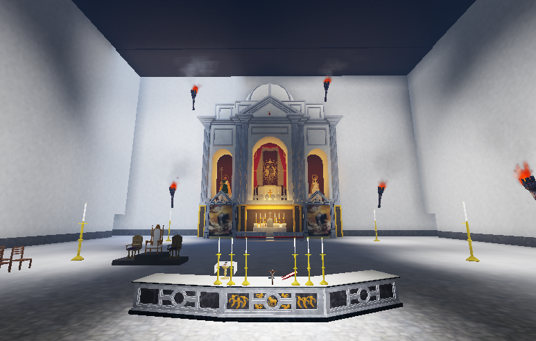

Keuskupan Santo Benediktus Nusantara
Keuskupan ini berdiri untuk melayani umat Katolik di wilayah Nusantara Timur dengan semangat pelayanan Santo Benediktus. Kami hadir membawa terang Kristus dalam kehidupan beriman dan sosial.
 



Misa Mingguan: Minggu pukul 07.00 & 18.00
Jadwal Misa: Lihat Jadwal Misa
Laporan keuangan keuskupan dapat diakses oleh publik demi transparansi dan akuntabilitas.
Donasi dapat disalurkan melalui QRIS berikut:

Kunjungan Uskup ke Paroki Santo Lukas pada tanggal 5 Mei 2025 dalam rangka perayaan ulang tahun ke-10 paroki tersebut.